Project 3A: Exploring the Power of Flow Models
Gautam Bhooma · CS 180 · Fall 2026
In this project I used a pretrained text-to-image flow model, PixNerd-XXL-P16-T2I, which generates 512×512 images directly in pixel space. I didn't train anything. Instead, I wrote the sampling loops around the model's velocity prediction vθ(xt, t, c). The model uses the linear flow-matching convention: xt = (1 − t)ε + t·x1, so t = 0 is pure Gaussian noise and t = 1 is a clean image. The model is trained to predict the velocity x1 − ε that points from the noise to the image. Unless stated otherwise, I used seed 180, Euler step size h = 0.02, and CFG scale w = 7.
My Input Images
The Campanile was provided with the project. Everything else is mine: two of my own photos, a Mondrian-style image from the web, and two drawings I made.
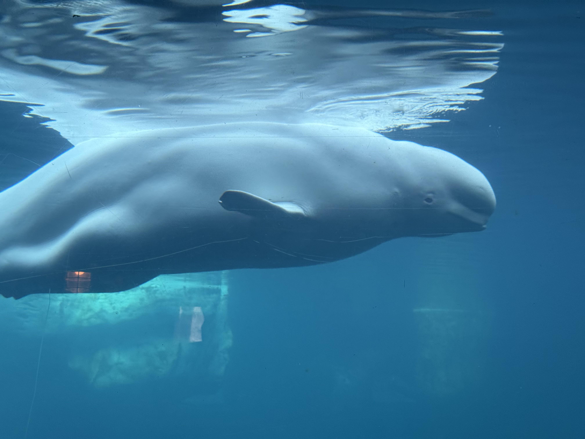


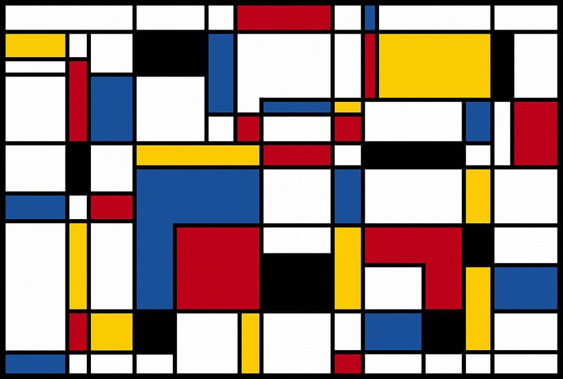
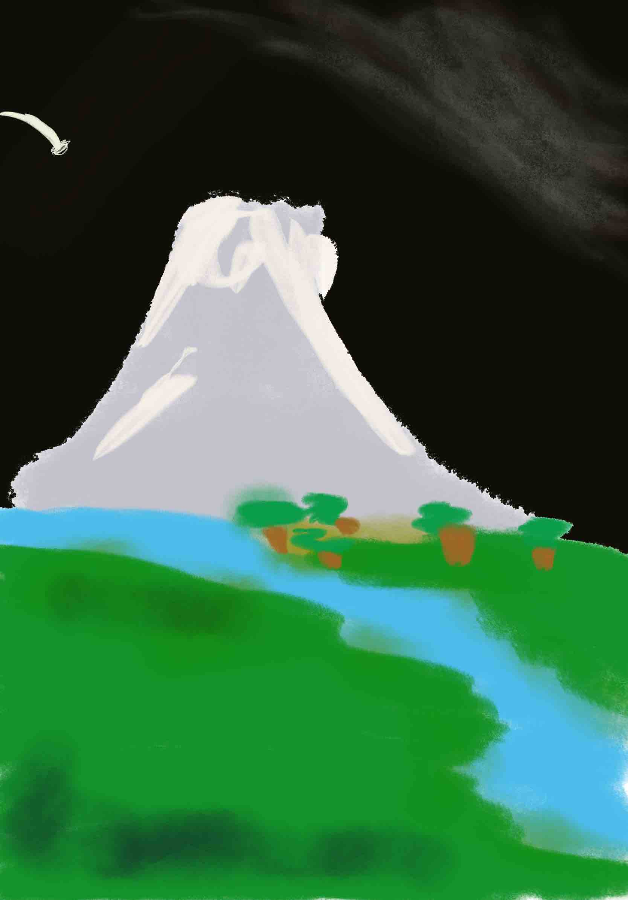

1.1 Constructing Noisy Training Inputs
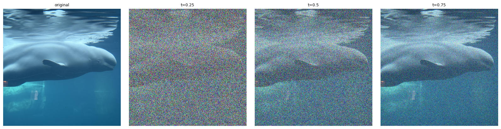
I implemented interpolate as (1 - t) * noise + t * image. I sampled one noise tensor
and reused it at all three times, so the only thing that changes between panels is how much signal versus noise
is mixed in. At t = 0.25 the beluga is barely visible through the noise, and at t = 0.75 it's easy to
recognize.
1.2 Classical Denoising (Gaussian Blur)

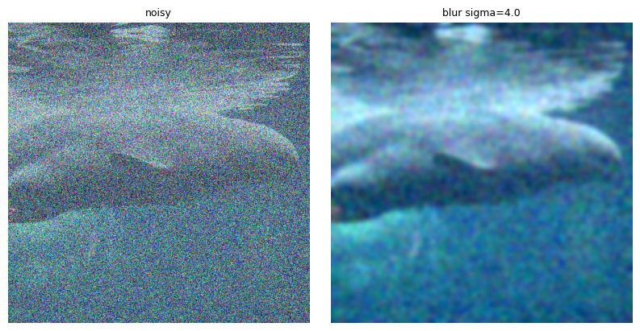
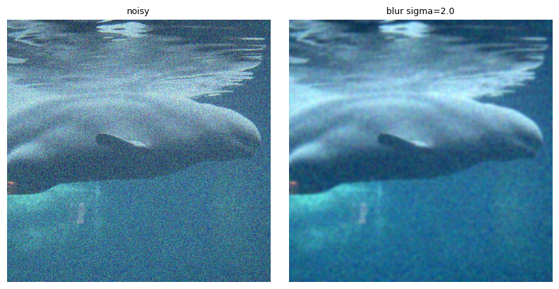
First I divided by t to restore the clean image's amplitude, since xt/t = x1 + ((1 − t)/t)ε. Then I blurred with σ ∈ {1, 2, 4, 8, 16} and kept the σ with the lowest MSE against the clean image. Blurring removes the high-frequency noise, but it also removes all of the image's fine detail, so the result is a smeared version of the image. At t = 0.25 there's so much noise that even the best blur leaves colored blotches everywhere.
1.3 One-Step Denoising

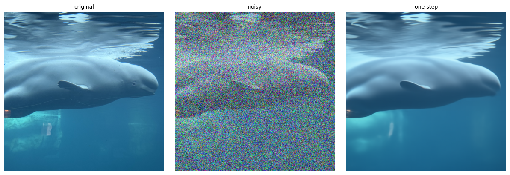

Here I used a single model call to jump straight to t = 1: x̂1 = xt + (1 − t)·vθ(xt, t, c), with the prompt "a high quality photo". The model predicts the average clean image given the noisy input. At t = 0.25 it gets the beluga's overall shape, pose and colors right, which is impressive considering how little of the beluga is visible, but the result is soft. The eye, the fine ripples on the water surface and the details in the background are gone. By t = 0.75 the estimate is almost indistinguishable from the original.
1.4 Visualizing Velocity
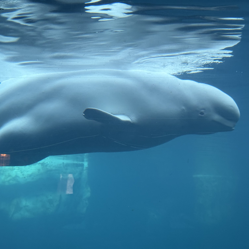

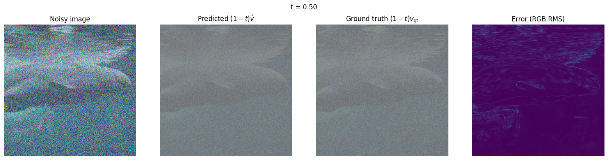
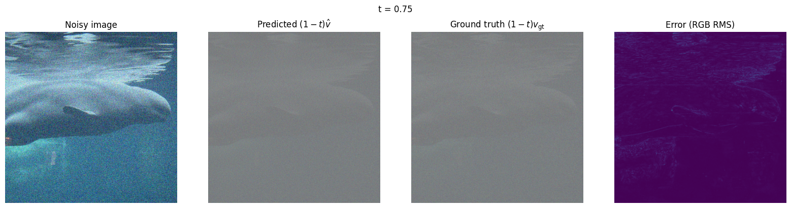
Each row shows the noisy input, the predicted update (1 − t)v̂, the ground-truth update x1 − xt, and the per-pixel error Et = √meanRGB[((1 − t)(v̂ − vgt))²]. The updates use one shared symmetric color scale, where middle gray means zero. The error maps also share one vmin/vmax across all three times. At t = 0.25 the error is concentrated on high-frequency structure: the ripples on the water surface, the outline of the beluga and its fin, and the objects in the bottom-left. The flat blue water is close to zero error, because a smooth region is easy to predict even from heavy noise. As t increases, the update the model needs to make gets smaller and there's more of the real image to work from, so by t = 0.75 the error map is almost entirely dark, with only faint edges left.
1.5 Iterative Denoising with Euler Sampling

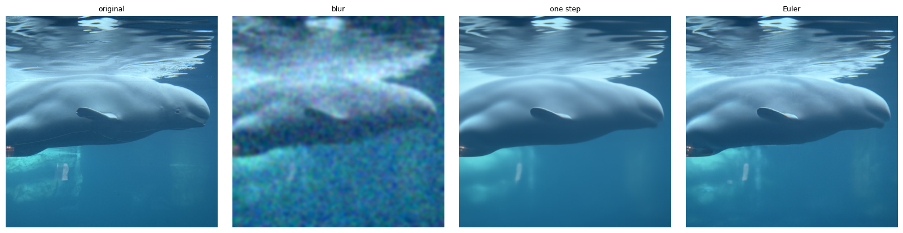
euler_sample repeats x ← x + h·v(x, t) and
recomputes the velocity at every step. If the last step would overshoot, it is shortened so that the sampler
ends exactly at t = 1. I checked this against a constant velocity field: 50 steps from 0, 25 steps from
0.5, and 4 steps from 0.93 with a shortened last step. In each case the result exactly matched the analytic
answer 1 − tstart.
In the comparison, the Gaussian blur is still grainy and loses the beluga's edges. The one-step estimate has the right shape but looks airbrushed. The Euler result is the sharpest: it brings back the water-surface ripples and the texture in the background, because each step only has to make a small correction and gets to re-look at the image. It isn't an exact copy of the original, though. Some of that detail is invented by the model rather than recovered.
1.6 Generating Images from Noise

All five samples are studio-style portraits of a single person against a plain background. Nothing in the prompt asks for a person, so this shows a strong subject bias: "a high quality photo" seems to mean "a portrait" to this model, probably because so many of the high-quality photos it was trained on are portraits. Without guidance, the quality is also inconsistent. Seed 184 and seed 182 look like real photos, but seed 180 has no face and seed 183's face is melted.
2.1 Classifier-Free Guidance

CFG runs the model twice at the same xt and t: once with the prompt (vc) and once with the empty prompt (vu). It then pushes the velocity further in the prompt's direction: vcfg = vc + w(vc − vu). With w = 0 this reduces exactly to the conditional prediction, and I checked that in the notebook.
Compared with 1.6, every CFG sample is a clean, coherent face: no missing or melted features, sharper detail and stronger contrast. The trade-off is variety. The CFG samples all look alike: centered, front-facing headshots with a slight smile and a plain dark or light background. The subject bias is still there, and guidance actually makes it stronger.
3.1 Image-to-Image Editing
This is SDEdit. I noise the image to a starting time tstart with (1 − tstart)ε + tstartx1, then integrate to t = 1 with CFG and the prompt "a high quality photo". A small tstart means almost pure noise, so the model is free to invent a new image. A larger tstart keeps more of the original. Starting times: 0.02, 0.04, 0.06, 0.10, 0.14, 0.25, 0.50.


The Pinnacles edits show the progression clearly. At t ≤ 0.06 the model ignores the photo and makes objects on plain backgrounds (a phone with a face on it, a gray appliance). By t = 0.10–0.14 it keeps the pale blue color scheme but turns it into a shirt. At t = 0.25 the tree, cliff and sky are back in roughly the right places, and t = 0.50 is close to the original.
Web Image and Hand-Drawn Images


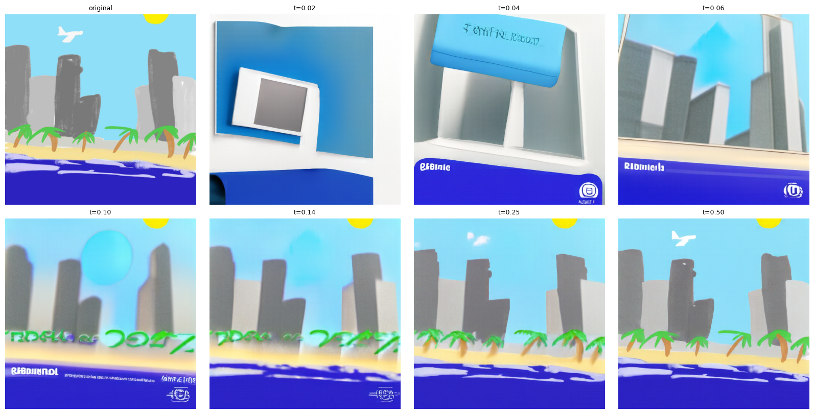
The Mondrian is preserved from t = 0.04 onward. Its large, flat blocks of color are such strong low-frequency structure that very little signal is needed to lock them in. The drawings are more fun. At mid-range starting times the model tries to make them "photos": the mountain turns into a white vase-like shape with a real river and grass, and the skyline's buildings become blurry real towers. At low and middle times it also invents garbled text and logos on the skyline, as if it thinks it's looking at an ad or a book cover. At t = 0.25–0.50 both drawings stay drawings.
3.2 Text-Guided Image Editing
This uses the same procedure as 3.1, but with my own prompt instead of "a high quality photo".
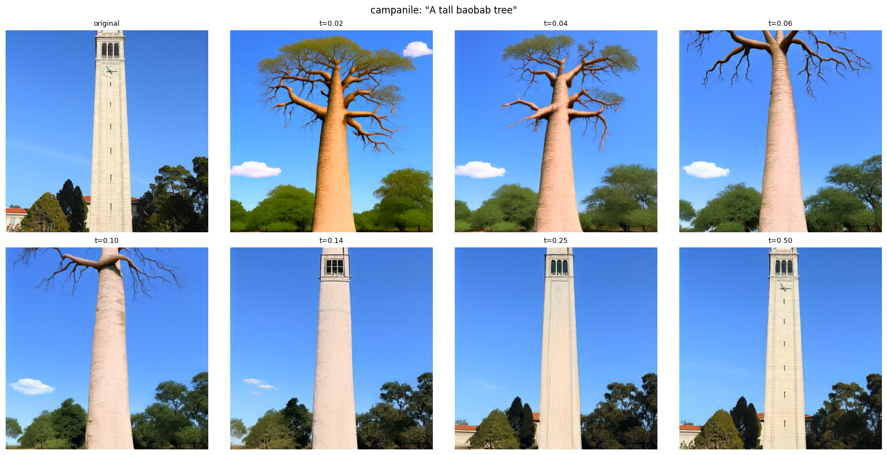


The baobab is my favorite. Because the Campanile is a tall, pale vertical shape against a blue sky, the model turns the tower into the baobab's trunk and keeps the sky and the trees at the bottom from t = 0.02 to 0.10. At t = 0.14 the result is half tower, half tree: a smooth trunk with the Campanile's windows on top. For the beluga, the low starting times produce a full cowboy scene, but it keeps getting bluer as tstart increases because it inherits the underwater color palette. At t = 0.14 the beluga itself is floating over a desert. For Pinnacles, the airplane appears at every starting time up to 0.25, where it's flying in front of the cliff.
3.3 Visual Anagrams
At each Euler step I average two CFG velocities. One is for prompt A on the upright image. The other is for prompt B on the image rotated 180°, rotated back afterward: v = ½[vcfg(x, t, p1) + flip(vcfg(flip(x), t, p2))]. The final image has to satisfy both prompts, one right side up and one upside down.


The old man / campfire pair works well. The fire becomes the glow on the old man's forehead, and the people around the fire make up his face. The village / horse pair is weaker: both views read correctly, but a ghostly upside-down horse head is clearly visible in the bottom of the village view.
3.4 Hybrid Images
This is Factorized Diffusion. At each step I combine the low frequencies of prompt A's velocity with the high frequencies of prompt B's: v = lowpass(v1) + v2 − lowpass(v2). The low-pass filter is a Gaussian blur with kernel size 265 and σ = 16. Up close you see prompt B; from far away (or shrunk down) you see prompt A. This is the same idea as the hybrid images in Project 2, except that here the model generates the image instead of me blending two photos. Below, each hybrid is shown full size (close) and shrunk to 64×64 (distant).